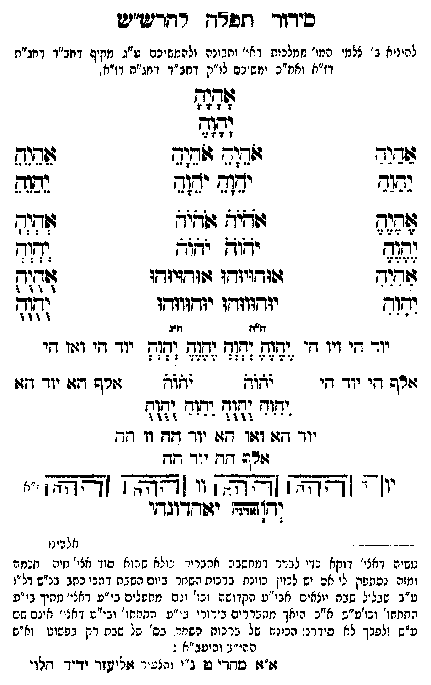

Neue Klartextfassung
[להעלות ב' צלמי המו' ממלכות דאי' ותבונה ולהמשיכם ע"ג מקיף דחב"ד דחג"ת דז"א וחו"ב ימשיכם לו"ק דחב"ד דחג"ת דז"א.] === טבלה === [טור ימין] אַהַיַהַ יַהַוַהַ אֶהֶיֶהֶ יֶהֶוֶהֶ אִהִיִהִ יִהִוִהִ [טור אמצעי] אָהָיָהָ יָהָוָהָ אֹהֵיָהֵ אֹהֵיָהֵ יֹהֵוָהֵ יֹהֵוָהֵ אֹהֹיֹהֹ אֹהֹיֹהֹ יֹהֹוֹהֹ יֹהֹוֹהֹ אוּהוּיוּהוּ אוּהוּיוּהוּ יוּהוּווּהוּ יוּהוּווּהוּ [טור שמאל] אֵהֵיֵהֵ יֵהֵוֵהֵ אְהְיְהְ יְהְוְהְ אֻהֻיֻהֻ יֻהֻוֻהֻ === סוף טבלה === === טבלה === [טור ימין] יוד הי ויו הי אלף הי יוד הי [טור אמצעי] [ה"ח ה"ג] יֶהֶוֶהֶ יְהְוְהְ יֶהֶוֶהֶ יְהְוְהְ יֹהֹוֹהֹ יֹהֹוֹהֹ יִהִוִהִ יֻהֻוֻהֻ יִהִוִהִ יֻהֻוֻהֻ יוד הא ואו הא יוד הה וו הה אלף הה יוד הה [טור שמאל] יוד הי ואו הי אלף הא יוד הא === סוף טבלה === [תרשים: ארבעה צירופי יהוה בקווים אופקיים ואנכיים המחברים את האותיות. לצדי התרשים וי וי וי וי; ז"א.] יאהדונהי יהוה (אדני)
Original gegen neue OCR · Niqqud für Vergleich ausgeblendet
Original
[להעלותK059-001 ב' צלמיK059-002 המו' ממלכות דאי' ותבונהK059-003 ולהמשיכם ע"ג מקיף דחב"ד דחג"תK059-004 דז"א וחו"ב ימשיכםK059-005 לו"ק דחב"ד דחג"ת דז"א.] === טבלה === [טור ימין] אהיה יהוה אהיה יהוה אהיה יהוה [טור אמצעי] אהיה יהוה אהיה אהיה יהוה יהוה אהיה אהיה יהוה יהוה אוהויוהו אוהויוהו יוהוווהו יוהוווהו [טור שמאל] אהיה יהוה אהיה יהוה אהיה יהוה === סוף טבלה === === טבלה === [טור ימין]K059-006 יוד הי ויו הי אלף היK059-007 יוד הי [טור אמצעי] [ה"ח ה"ג] יהוה יהוה יהוה יהוה יהוה יהוה יהוה יהוה יהוה יהוהK059-008 יוד הא ואו הא יוד ההK059-009 וו הה אלף הה יוד הה [טור שמאל] יוד הי ואו הי אלף הא יוד הא === סוף טבלה === [תרשים: ארבעה צירופי יהוה בקווים אופקיים ואנכיים המחברים את האותיות. לצדי התרשים וי וי וי וי; ז"א.] יאהדונהי יהוה (אדני)K059-010
OCR · fehlbar
סידוך- תפרד רדדיש"יש להיניאK059-001 ב' צלמ'K059-002 המו' ממלכוח דא-' יתבינהK059-003 ולהמשיכם ע"ג מקיף דחב"ד דחג"חK059-004 דז"א ואח"כ ימש. כםK059-005 לו"ק דחב"ד דחג"ח דזיא. שדוה 4 74 14 2 וגזז שגיד לדוש ל2זב גוש נבוד ידוד י4(ג הגס דגש ודא (ו9יש לל8 גרג- יוא יד"ש וקח איר ו(ודויודו גזזדזויודו זד(ק יחוד יודוזדו יזדווזדו ([4 לש ז"ג וד חי ויו ד יזו (גוד (:7 (ד(ל יד די ייו די זרש דיK059-006 יוד די זת ([ו7 יורש דו:K059-007 יוד וז:: ישוח וגז( ידק(ח וזח - - ו ' : זז) ז' - - - - ז )ז ידך ש:: דג:1 גו יו- זג דו 7 זזרש דז.K059-008 יוד חד יו -' [[צאצצא [צצץאא]]K059-009 וו [ [צאצא (צאץאא.ז ' זצזזצח (שדץוגךי -- - - - - נזלעינו טשיה דאצי' דוקא כ"י לברר דמחשב ה אחגרי' מולא (זרוא סיד אצי' חיה חבמה ומזה נסחפק לי אם יש לכוין כוונת ברכות השנזר ביום השגח דהכי כחב בנ"ש דל"ו ע"ב שבליל שבח יוצאים אבי"ע הקדושה וכ. ' ( גם מתטלים בי"ע דאצי' מחוך בי"ע התחחו' וכוע"ש א"כ היאך מזחבררים בירור י ג "ע התחתו' ובי"ע דאצי' אינם שם ע"ש זלפכך לא סידרנן הנונת של ברכות השחר בס' של שבת רק בפשוט וא"ש ה הי"ב והיטב"א : וזן פחדי ש ב"י והצעיר זזפישזך ידיך דלויK059-010